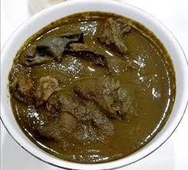

G - g
 Gbánúnù n. [g͡bánṹnũ̀] a traditional medicinal dark soup from Ondo State, Nigeria, renowned as a colon cleanser or detoxifier. Kílódé tí o fi fẹ́ràn ọbẹ̀ gbánúnù Why do you love white butterfly soup so much?
Gbánúnù n. [g͡bánṹnũ̀] a traditional medicinal dark soup from Ondo State, Nigeria, renowned as a colon cleanser or detoxifier. Kílódé tí o fi fẹ́ràn ọbẹ̀ gbánúnù Why do you love white butterfly soup so much?
 |
 Gbẹ̀gìrì n. [g͡bɛ̀gìɹì] traditional, savory Nigerian soup originating from the Yoruba people, made by boiling, peeling, and blending beans—typically black-eyed or brown peas—into a smooth, thick paste. ọbẹ̀ gbẹ̀gìrì jẹ́ ọbẹ̀ kìki Gbẹ̀gìrì is a thick soup.
Gbẹ̀gìrì n. [g͡bɛ̀gìɹì] traditional, savory Nigerian soup originating from the Yoruba people, made by boiling, peeling, and blending beans—typically black-eyed or brown peas—into a smooth, thick paste. ọbẹ̀ gbẹ̀gìrì jẹ́ ọbẹ̀ kìki Gbẹ̀gìrì is a thick soup.